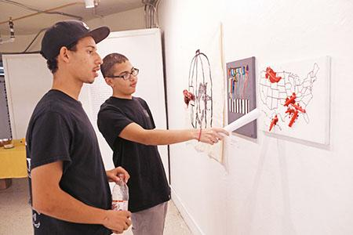
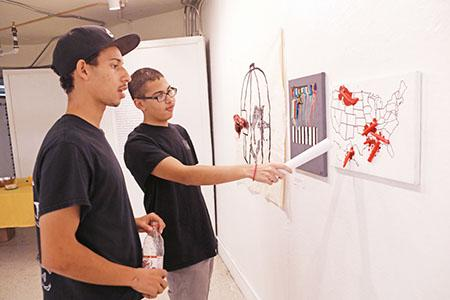

| |
|
|
|
I study Computer Programming in CSC106 at the Unviversity of Rhode Island. I'm interested in creating innovative things with the use of
computer science. One of my other passions is actually creating video games. I want to create video games to show my creative side. I also believe
computer science is a great choice because there are so many field of work that need the help of computer scientists.

 One of my hobbies is actually doing photography. I just find the joy of going out exploring nature and people and find the right moment to take the photo shot.
 I'm am also part of an anti-gunviolence art project called One Gun Gone. Which took a decommissioned gun turn it into art to bring the awarness to and combat gunviolence and fund a gunback program.
One of my hobbies is actually doing photography. I just find the joy of going out exploring nature and people and find the right moment to take the photo shot.
 I'm am also part of an anti-gunviolence art project called One Gun Gone. Which took a decommissioned gun turn it into art to bring the awarness to and combat gunviolence and fund a gunback program.